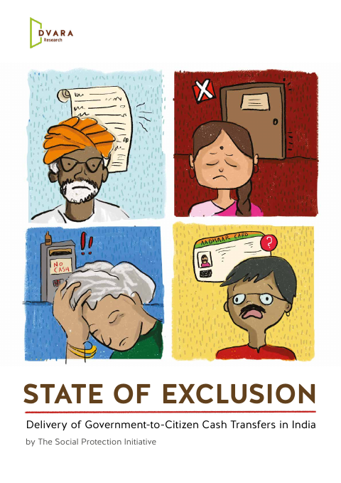
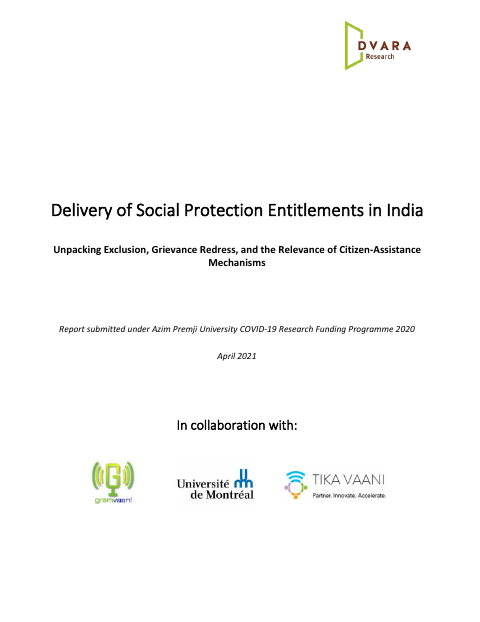
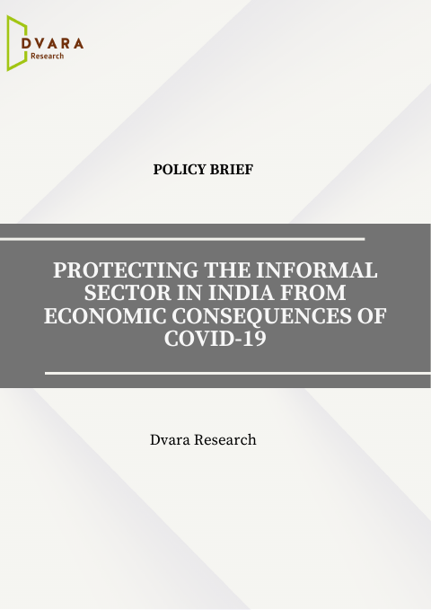

Reports prepared for the consideration of regulators and government, grouped by the kind of work — field studies of welfare delivery, economic estimation and programme evaluation, regulatory and market design, and formal responses to draft regulation. Most were produced at Dvara Research.


